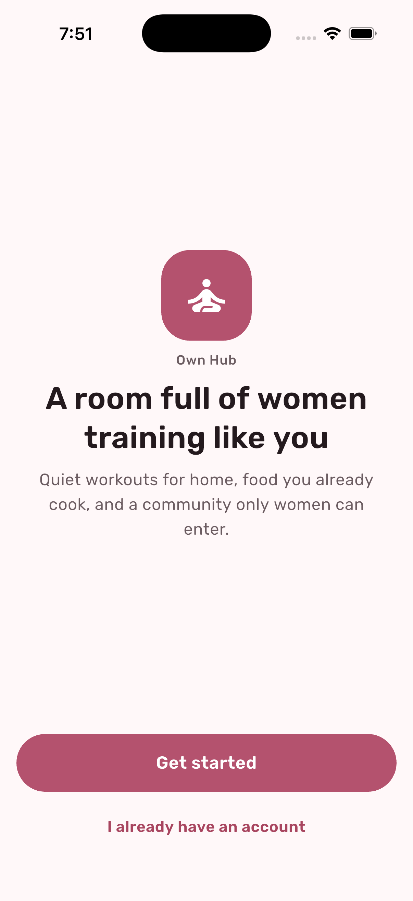
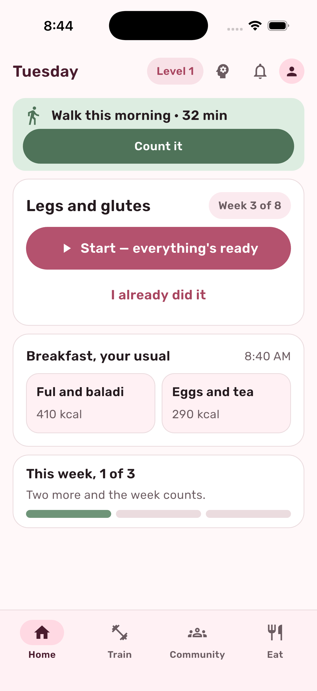
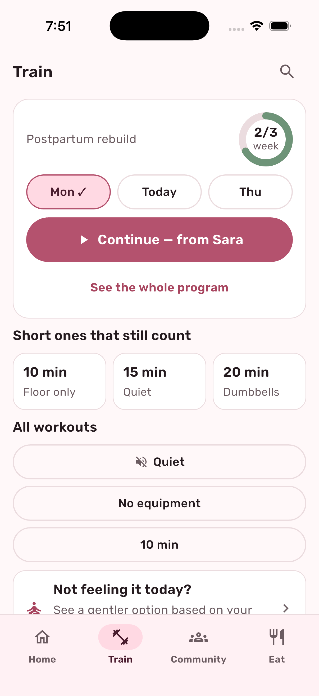
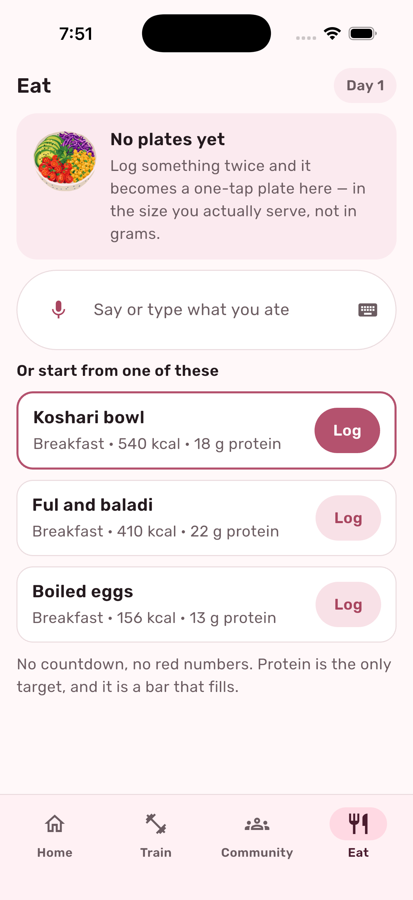
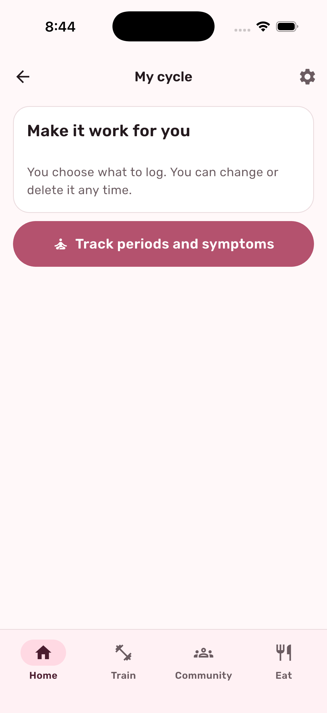
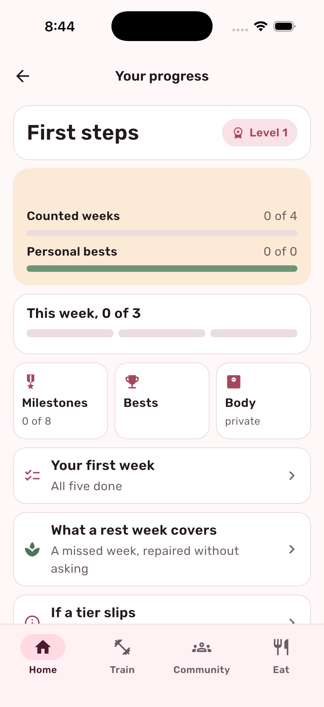
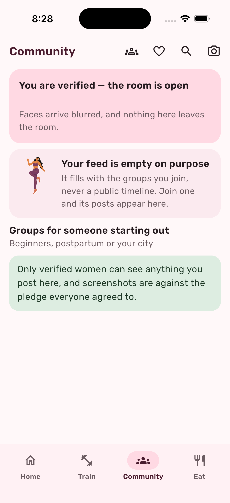
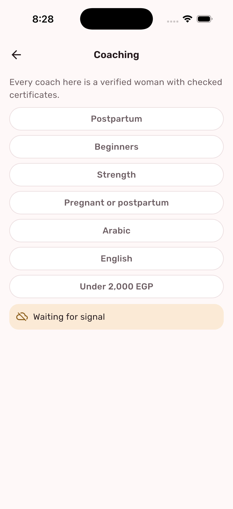
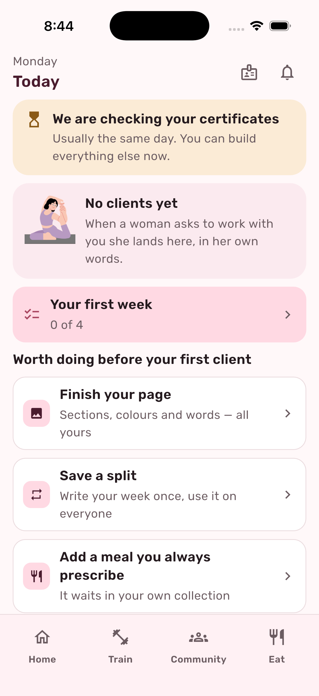
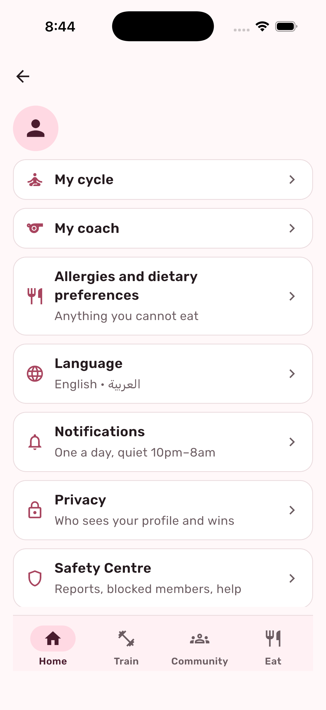
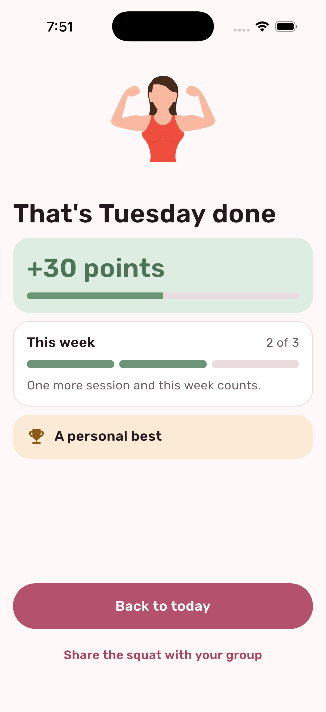

Own Hub
A room full of women training like you
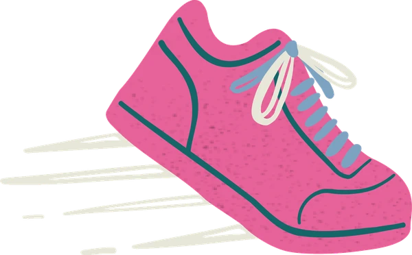
Women only
Every member checked
Both images are deleted after the check.
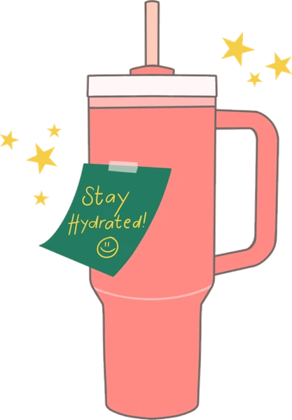
Today
What to do today
Nothing shouting.
Train
Quiet workouts you can do at home
Sessions counted, not days.
10 minFloor only
15 minQuiet
20 minDumbbells
Eat
Say or type what you ate
In the size you serve.
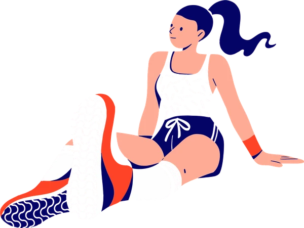
My cycle
Private by default
Off by default. Coaching never requires it.
A gentler option today
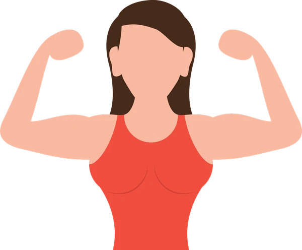
Progress
Measured against your own history
Counted weeks
Personal bests
Nobody sees this.
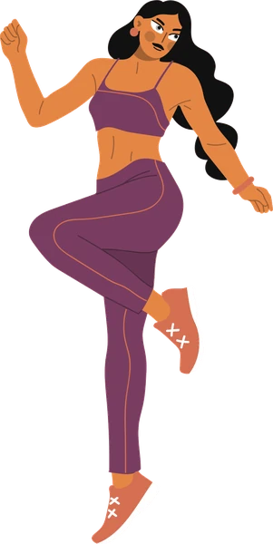
Community
Only verified women get in
Faces arrive blurred.
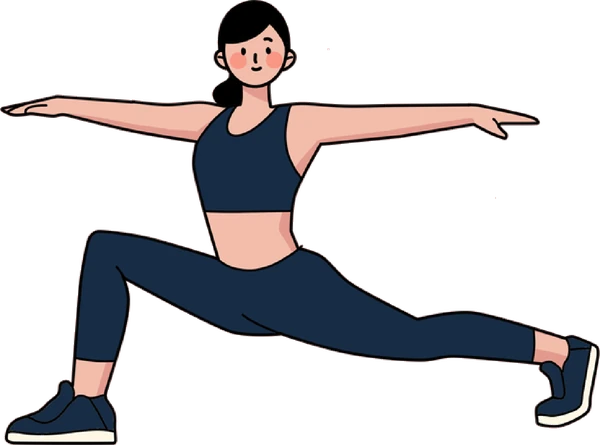
Coaching
Real women, checked certificates
Every coach is verified.
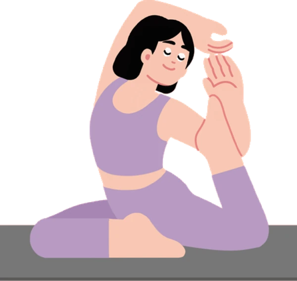
Privacy
What you show is yours
Privacy
Safety Centre
Your ID and selfie were deleted.
Own Hub
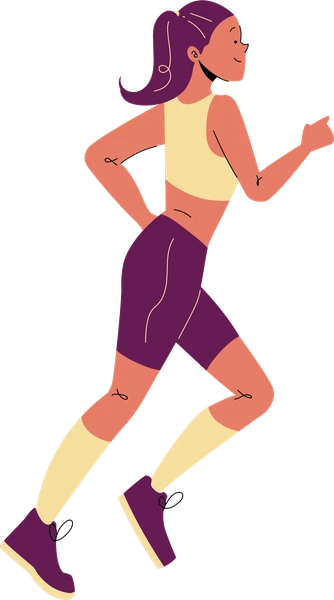
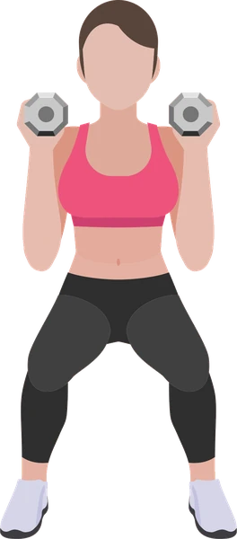
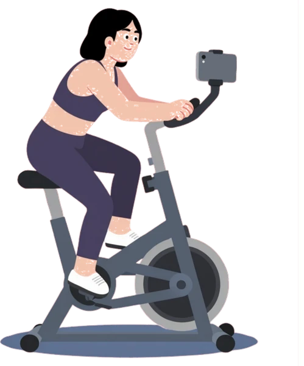
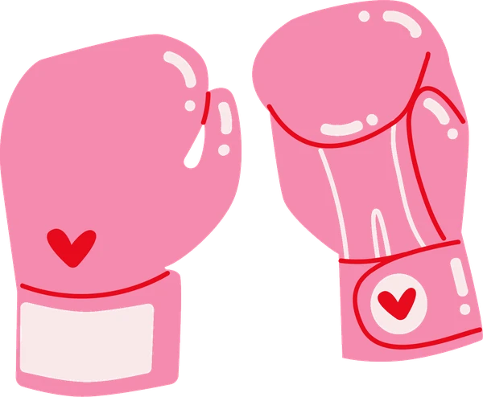

Own Hub
A community only women can enter.